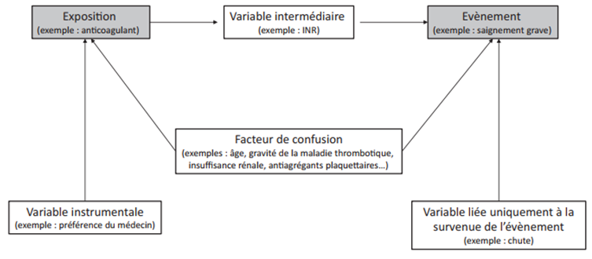

Cet article est consacré au score de propension. Après un rappel des notions de covariables, de biais et des différents types d’étude statistique, Cet article détaille la méthode du score de propension, une méthode utilisée dans les études observationnelle comme technique de contrôle de biais pouvant entaché les conclusions causales. Sans trop aborder les aspects techniques, j’introduire des méthodes de création et de validation du score de propension, son utilisation, et quelques technique de contrôle de biais résiduels inhérent au score de propension. Enfin je présente aussi les forces et faiblesses de la méthode du score de propension. Cet article est inspiré de l’article de Moulis et al. (2018).
Une étude statistique peut être vue comme une collection de variables et de méthodes d’analyse de ces variables conformément à l’objectif de l’étude. Le plus souvent il s’agira d’explorer ou de comprendre le lien entre deux variables spécifiques tout en tenant compte de la présence d’autres variables qui peuvent s’influencer mutuellement : il s’agit là de covariables. Les covariables d’une étude statistique peuvent être réparties en 6 catégories comme indiqué dans la figure 1 (Moulis and Lapeyre-Mestre 2018).
Variable dépendante (évènement) : variable d’intérêt dans une étude (exemple saignement grave).
Variable indépendante (exposition) : variable dont on veut comprendre l’influence sur la variable d’étude (exemple anticoagulant).
Variable médiatrice (intermédiaire) : variable se situant sur le chemin causal allant de la variable indépendante à la variable dépendante, exemple INR.
Facteur de confusion : Variable liée à la fois à la variable indépendante et à la variable dépendante. Variable qui est source de variabilité à la fois de la variable dépendante et de la variable indépendante. Exemple l’âge, sexe, insuffisance rénale.
Variable instrumentale : variable qui influence uniquement la variable indépendante.
Variable liée uniquement à l’événement, exemple chute.

Figure 1. Les différents types de variables dans une étude statistique (Moulis et al. 2018).
Le but d’une étude statistique est d’obtenu une représentation exacte de la réalité à partir de l’analyse de données collectées. Pour des raisons de ressources limitées, les données de l’analyse sont incomplètes. Souvent un échantillon de la population est utilisé et les conclusions d’analyse sur l’échantillon sont extrapolées à l’échelle de la population ; ce qui principalement peut induire des erreurs d’appréciation dites bais. Un biais est une erreur de raisonnement ou de procédure qui amène à une représentation fausse de la réalité. Les biais courant en statistique sont :
Biais de sélection (erreur de procédure) : une erreur systématique faite lors de la sélection des sujets à étudier. Elle traduit un échantillon non représentatif de la population étudiée.
Biais d’information (ou biais de mesure, erreur de procédure) : une erreur systématique due à une mauvaise mesure d’une ou plusieurs variables de l’étude (exposition, évènement, médiatrice, etc.).
Biais d’indication (ou biais d’évaluation, erreur de raisonnement): une erreur systématique due au fait que la mesure du critère de jugement (de survenu de l’évènement) n’est pas réalisée de la même manière dans les groupes comparés. Il s’agit d’un raisonnement inconscient ou d’une croyance selon laquelle les patients les plus exposés sont aussi ceux les plus à risque de développer l’événement, conduisant à une tendance à relâcher le critère de jugement de survenu de l’événement chez la population la plus exposé. Elle entraine souvent une surestimation de l’effet de l’exposition.
Biais d’interprétation : une erreur systématique d’interprétation des résultats d’analyse entrainant une fausse représentation de la réalité.
NB : Il est donc important tout au long d’une étude statistique d’éviter ou de contrôler l’ensemble des biais potentiels.
Nous pouvons identifier deux types d’études statistiques :
Une étude expérimentale est une étude contrôlée qui permet de répondre à la question : « est-ce que l’exposition a un effet sur la survenue de l’événement en conditions expérimentales ?». Elle présente les avantages suivantes:
Ses faiblesses sont :
Les études observationnelles permettent de répondre à la question : « quel est l’effet de l’exposition sur la survenue de l’événement en conditions réelles ? » Elle présente l’avantage de faire :
Leurs faiblesses sont :
On peut identifier deux approches pour contrôler les biais dans une étude observationnelle :
Modèle d’analyse multivarié dont les forces et faiblesses sont :
Méthode du score de propension (Rosenbaum and Rubin 1984) dont les forces et faiblesses sont :
Dans la méthode du score de propension, un score de propension est calculé pour chaque individu. Le score de propension de chaque individu est la probabilité d’être exposé conditionnellement à des covariables de l’étude.
Soit :
\[\begin{equation}\label{eq1} sp = P(X=1\rvert S =s) \end{equation}\]
Ainsi, le jeu de données est complété par les scores de propension des individus calculés à partir de la formule . La formule étant une formule probabiliste, elle requiert une estimation. Je détaillerai dans un prochain article les méthodes d’estimation du score de propension. Toutefois le principe est de faire une régression pour estimer le score de propension de chaque individu.
Il est important de définir un vrai porcessus de choix des variables devant servir à la création du score. J’ai pu identifier dans la litérature deux approches que sont:
L’objectif du score de propension est de restaurer une équiprobabilité entre les groupes d’exposition afin de contrôler d potentiels biais (surtout le biais de sélection). Il est donc important de vérifier que le SP restaure l’équiprobabilité d’exposition entre groupe exposé et groupe non exposé. Le score de propension est une variable dérivée de l’étude. Et en tant que telle, on peut vérifier que les groupes d’exposition sont comparables au regard de cette variable, tout comme on faire un test de comparaison de moyenne d’une variable pour comparer des groupes de sujets. On peut donc:
Le plus important c’est l’utilisation que nous faisons des outils à disposition. À ce titre, il est important de connaitre les méthodes et recommandations d’utilisation du score de propension.
Le score de propension peut être utilisé comme suit :
De toutes ces méthodes, quelle est la meilleure?
Des biais résiduels peuvent existés à cause de variables non-observables non prise en compte dans la méthode du score de propension. Ces biais peuvent être corrigés par :
Le score de propension est donc une technique utile pour qu’une étude observationnelle se rapproche des conditions « expérimentales » de comparabilité d’une étude randomisée. Cependant, il n’est pas dénué de limites et ne permet pas de remplacer une étude randomisée.
Moulis, G, and M Lapeyre-Mestre. 2018. “Score de Propension: Intérêts, Utilisation et Limites. Un Guide Pratique Pour Le Clinicien.” La Revue de Médecine Interne 39 (10): 805–12.
Pearl, Judea, and others. 2000. “Models, Reasoning and Inference.” Cambridge, UK: CambridgeUniversityPress.
Rosenbaum, Paul R, and Donald B Rubin. 1984. “Reducing Bias in Observational Studies Using Subclassification on the Propensity Score.” Journal of the American Statistical Association 79 (387): 516–24.